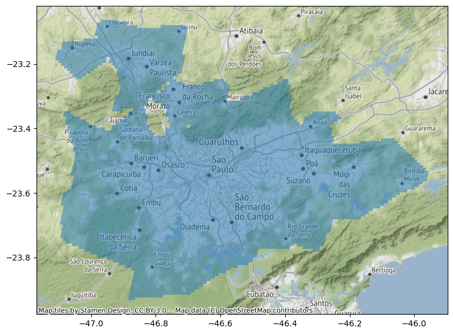
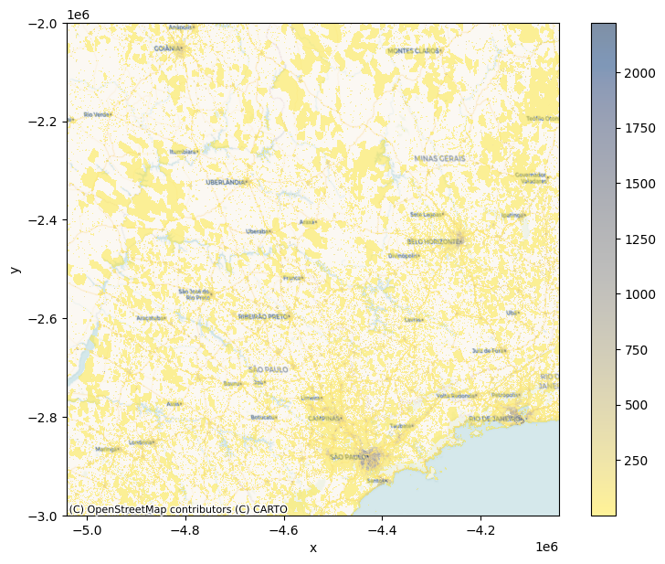
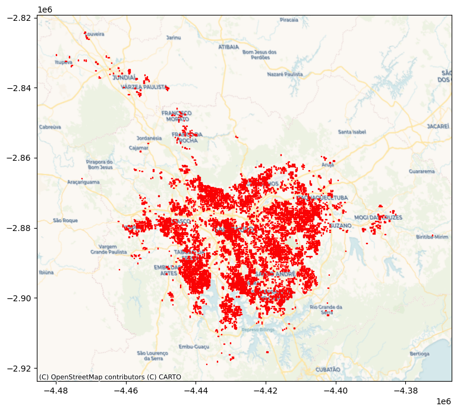

import pandas
import osmnx
import geopandas
import rioxarray
import xarray
import datashader as ds
import contextily as cx
from shapely import geometry
import matplotlib.pyplot as plt
import foliumConverting Data from Raster to Tabular (Geometry) format
Import the libraries
import warnings
warnings.filterwarnings(action='ignore')Download Geopackage
# URL for the geopackage
url = ("https://jeodpp.jrc.ec.europa.eu/ftp/"\
"jrc-opendata/GHSL/"\
"GHS_FUA_UCDB2015_GLOBE_R2019A/V1-0/"\
"GHS_FUA_UCDB2015_GLOBE_R2019A_54009_1K_V1_0.zip"
)
url'https://jeodpp.jrc.ec.europa.eu/ftp/jrc-opendata/GHSL/GHS_FUA_UCDB2015_GLOBE_R2019A/V1-0/GHS_FUA_UCDB2015_GLOBE_R2019A_54009_1K_V1_0.zip'Visualize the map
# Visualize the Map for Sao Paulo
p = f"zip+{url}!GHS_FUA_UCDB2015_GLOBE_R2019A_54009_1K_V1_0.gpkg"
fuas = geopandas.read_file(p)
sao_paulo = fuas.query("eFUA_name == 'São Paulo'").to_crs("EPSG:4326")ax = sao_paulo.plot(alpha=0.5, figsize=(9, 9))
cx.add_basemap(ax, crs=sao_paulo.crs);
Download the population data
url = ("https://cidportal.jrc.ec.europa.eu/ftp/"\
"jrc-opendata/GHSL/GHS_POP_MT_GLOBE_R2019A/"\
"GHS_POP_E2015_GLOBE_R2019A_54009_250/V1-0/"\
"tiles/"\
"GHS_POP_E2015_GLOBE_R2019A_54009_250_V1_0_13_11.zip"
)
url'https://cidportal.jrc.ec.europa.eu/ftp/jrc-opendata/GHSL/GHS_POP_MT_GLOBE_R2019A/GHS_POP_E2015_GLOBE_R2019A_54009_250/V1-0/tiles/GHS_POP_E2015_GLOBE_R2019A_54009_250_V1_0_13_11.zip'# Population data in raster format
%%time
p = f"zip+{url}!GHS_POP_E2015_GLOBE_R2019A_54009_250_V1_0_13_11.tif"
ghsl = rioxarray.open_rasterio(p)
ghslCPU times: user 35.6 ms, sys: 4.12 ms, total: 39.8 ms
Wall time: 7.12 s<xarray.DataArray (band: 1, y: 4000, x: 4000)>
[16000000 values with dtype=float32]
Coordinates:
* band (band) int64 1
* x (x) float64 -5.041e+06 -5.041e+06 ... -4.041e+06 -4.041e+06
* y (y) float64 -2e+06 -2e+06 -2.001e+06 ... -3e+06 -3e+06
spatial_ref int64 0
Attributes:
AREA_OR_POINT: Area
_FillValue: -200.0
scale_factor: 1.0
add_offset: 0.0Visualize the population on raster data
cvs = ds.Canvas(plot_width=600, plot_height=600)
agg = cvs.raster(ghsl.where(ghsl>0).sel(band=1))f, ax = plt.subplots(1, figsize=(9, 7))
agg.plot.imshow(ax=ax, alpha=0.5, cmap="cividis_r")
cx.add_basemap(
ax,
crs=ghsl.rio.crs,
zorder=-1,
source=cx.providers.CartoDB.Voyager
)
# Clip the data for Sao Paulo
ghsl_sp = ghsl.rio.clip(sao_paulo.to_crs(ghsl.rio.crs).geometry.iloc[0])
ghsl_sp/home/thulasiram/miniconda3/envs/geopy/lib/python3.9/site-packages/rasterio/features.py:290: ShapelyDeprecationWarning: Iteration over multi-part geometries is deprecated and will be removed in Shapely 2.0. Use the `geoms` property to access the constituent parts of a multi-part geometry.
for index, item in enumerate(shapes):<xarray.DataArray (band: 1, y: 416, x: 468)>
array([[[-200., -200., -200., ..., -200., -200., -200.],
[-200., -200., -200., ..., -200., -200., -200.],
[-200., -200., -200., ..., -200., -200., -200.],
...,
[-200., -200., -200., ..., -200., -200., -200.],
[-200., -200., -200., ..., -200., -200., -200.],
[-200., -200., -200., ..., -200., -200., -200.]]], dtype=float32)
Coordinates:
* band (band) int64 1
* x (x) float64 -4.482e+06 -4.482e+06 ... -4.365e+06 -4.365e+06
* y (y) float64 -2.822e+06 -2.822e+06 ... -2.926e+06 -2.926e+06
spatial_ref int64 0
Attributes:
AREA_OR_POINT: Area
scale_factor: 1.0
add_offset: 0.0
_FillValue: -200.0out_p = “../data/ghsl_sao_paulo.tif” ! rm $out_p ghsl_sp.rio.to_raster(out_p)
Convert Raster to geometry
# Read the raster data
surface = xarray.open_rasterio("../data/ghsl_sao_paulo.tif")# Convert raster to geometry
t_surface = surface.to_series()t_surface.head()band y x
1 -2822125.0 -4481875.0 -200.0
-4481625.0 -200.0
-4481375.0 -200.0
-4481125.0 -200.0
-4480875.0 -200.0
dtype: float32t_surface = t_surface.reset_index().rename(columns={0: "Value"})t_surface.query("Value > 1000").info()<class 'pandas.core.frame.DataFrame'>
Int64Index: 7734 entries, 3785 to 181296
Data columns (total 4 columns):
# Column Non-Null Count Dtype
--- ------ -------------- -----
0 band 7734 non-null int64
1 y 7734 non-null float64
2 x 7734 non-null float64
3 Value 7734 non-null float32
dtypes: float32(1), float64(2), int64(1)
memory usage: 271.9 KBtype(t_surface)pandas.core.frame.DataFrame# Calculate the polygon based on resolution values
def row2cell(row, res_xy):
res_x, res_y = res_xy # Extract resolution for each dimension
# XY Coordinates are centered on the pixel
minX = row["x"] - (res_x / 2)
maxX = row["x"] + (res_x / 2)
minY = row["y"] + (res_y / 2)
maxY = row["y"] - (res_y / 2)
poly = geometry.box(
minX, minY, maxX, maxY
) # Build squared polygon
return poly# Get the polygons
max_polys = (
t_surface.query(
"Value > 1000"
) # Keep only cells with more than 1k people
.apply( # Build polygons for selected cells
row2cell, res_xy=surface.attrs["res"], axis=1
)
.pipe( # Pipe result from apply to convert into a GeoSeries
geopandas.GeoSeries, crs=surface.attrs["crs"]
)
)# Plot polygons on the map
ax = max_polys.plot(edgecolor="red", figsize=(9, 9))
# Add basemap
cx.add_basemap(
ax, crs=surface.attrs["crs"], source=cx.providers.CartoDB.Voyager
)
Convert Geometry to Raster
new_da = xarray.DataArray.from_series(
t_surface.set_index(["band", "y", "x"])["Value"]
)
new_da<xarray.DataArray 'Value' (band: 1, y: 416, x: 468)>
array([[[-200., -200., -200., ..., -200., -200., -200.],
[-200., -200., -200., ..., -200., -200., -200.],
[-200., -200., -200., ..., -200., -200., -200.],
...,
[-200., -200., -200., ..., -200., -200., -200.],
[-200., -200., -200., ..., -200., -200., -200.],
[-200., -200., -200., ..., -200., -200., -200.]]], dtype=float32)
Coordinates:
* band (band) int64 1
* y (y) float64 -2.926e+06 -2.926e+06 ... -2.822e+06 -2.822e+06
* x (x) float64 -4.482e+06 -4.482e+06 ... -4.365e+06 -4.365e+06